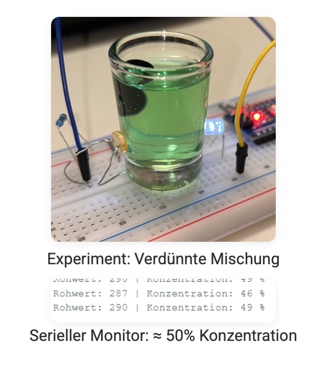
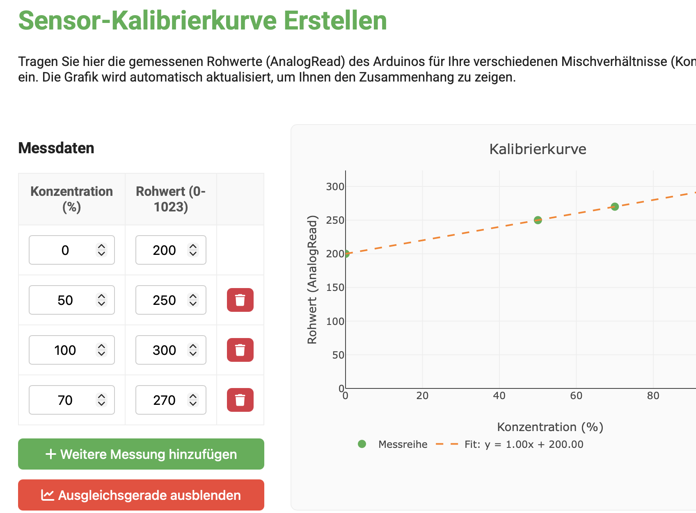
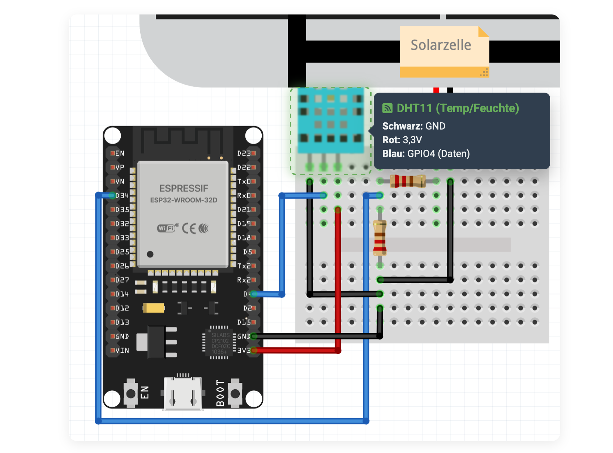

Für NwT-Projekte existieren Unterrichtseinheiten und Materialien – viele sind jedoch zu oberflächlich oder
nur für eingeloggte Lehrkräfte zugänglich. Die hier erprobten digitalen Lernmodule sollen diese
Lücke schließen:
interaktive Webseiten, die Theorie, Schaltungsaufbau und Codearbeit didaktisch strukturiert von Anfang bis zum
funktionierenden Ergebnis begleiten.
1
Fotometer
Arduino · Optik · analoge Sensorik · Python-Auswertung · Kalibrierkurve
2
Wetterstation-App
ESP32 · WLAN · HTTP-Datenübertragung · lokaler Webserver · Visualisierung



Ablauf des Nachmittags
15 Min
☕
Ankommen &
Einführung
~90 Min
💻 🔧
Modul erkunden &
Hardware aufbauen
Freie Modulwahl · eigenes Tempo
Hardware und Laptops bereit
15 Min
💬
Feedback &
Diskussion
Verpflegung: Snacks und Getränke werden gestellt – herzlichen Dank für Ihren Weg!
📍 Ort
Digital Learning Lab (DLL) am KIT
Geb. 50.19, Raum 108 / Seminarraum 5 · 1. Stock
Adenauerring 12 · 76131 Karlsruhe
🎯 Ihre Rolle
- Module aus Lehrkraft-Perspektive testen
- Kurzer anonymer Fragebogen am Ende
- Ihr Feedback fließt direkt in die
Weiterentwicklung der Module ein